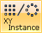
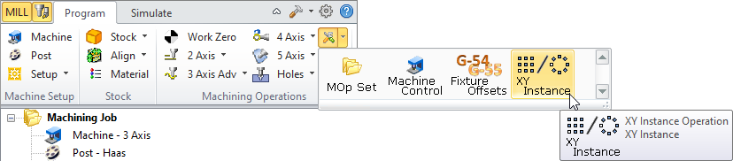
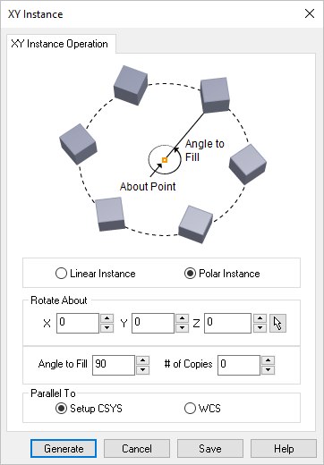
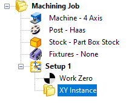
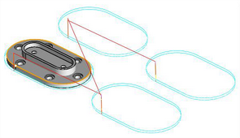

Available in: |
Xpress |
Standard |
Expert |
Professional |
Premium |

XY Instance
This operation allows you to create instance of machining operations. The instance could be a linear or polar pattern. The instance applies to all operations created under the instance operation. This is useful when multiple copies of the same part is required and eliminates programming of each copy individually. The operation and all of its instances can be simulated using the Simulate tab.
You can create an Instance operation by selecting “XY Instance” from Create Miscellaneous Operations under the Program tab in Machining Browser.  XY Instance Menu Item
|
When you select this option, the following dialog will be invoked. Instance can be set to Linear or Polar. Linear Instance Here you specify the X and Y Spacing between the toolpath instances. Specifying # of X Copies and #of Y Copies creates the specified number of additional copies in X and Y.
Polar Instance Here you specify center of rotation which refers to the point to rotate about, the total angle to fill and the number of copies. The number of copies is evenly distributed about the angle to fill.  Dialog Box: XY Instance, Polar Instance Parallel To Use these options to determine how the resulting XY Instance is oriented. If your setup is oriented differently than the default WCS (using 5 axis 3+2) methods you can choose the Setup CSYS option and the XY plan of the instance will be parallel to the active Setup XY plane. If you are using the default Setup 1, then select the WCS option and the instance will be parallel to the default XY plane. |
Select Generate and XY Instance operation is now created under Machining Browser.  XY Instance operation shown under Setup |
You can create machining operations or move existing machining operations under an XY Instance folder. The instance applies to all operations under the XY instance operation. •To create a new operation under a XY Instance operation, select the XY Instance operation folder under the Machining Browser and then choose from Milling or Hole Machining operations. The operation would appear below the XY Instance operation folder and is a level into the Machining Job tree structure. •To move existing operations, select a machining operation, drag and drop it into the XY Instance operation folder so the machining operation appears one level into the Machining Job tree. •Multiple XY Instance operations can be created and operations can be grouped under each XY Instance operation folder.
|
Example below shows XY instance using linear instance.  |